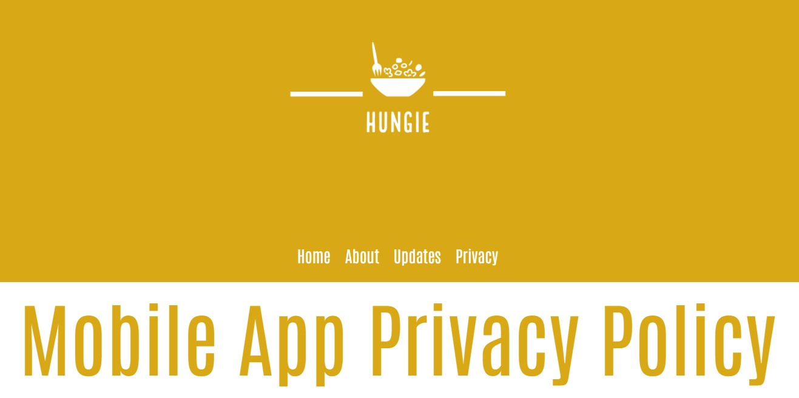
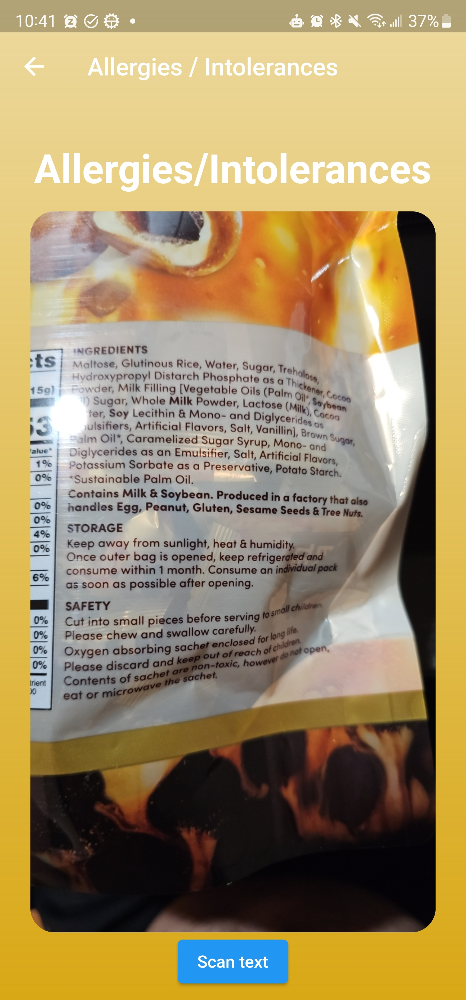
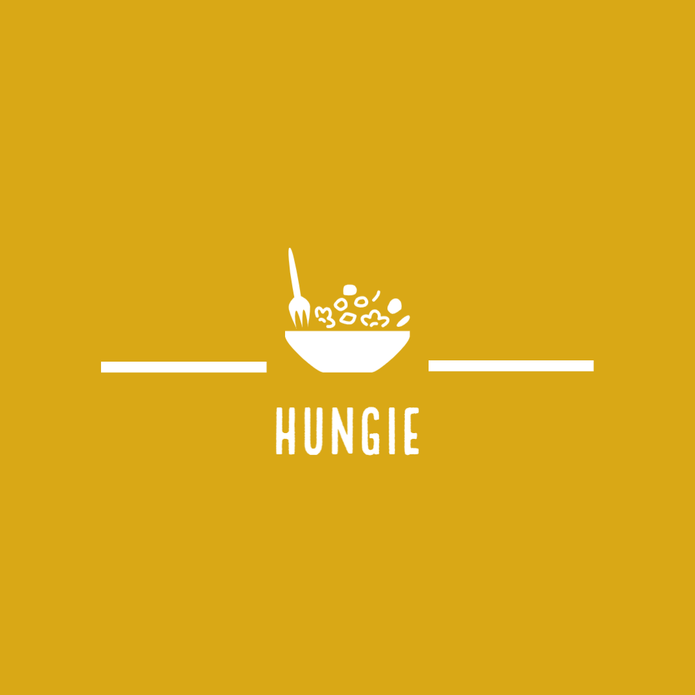
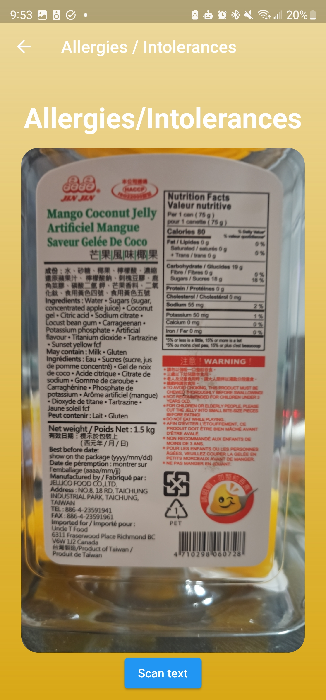
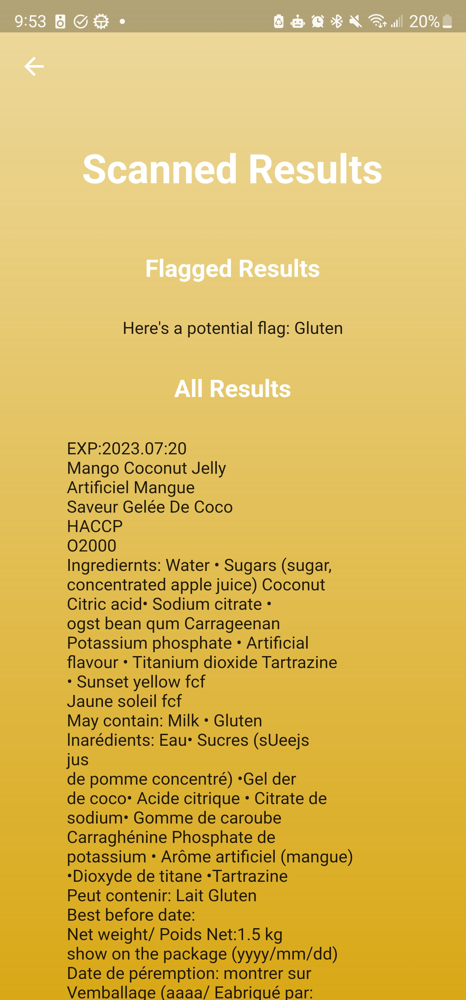

Updates
As of 10/10/2023, here is the progress of HUNGIE:

In preparation for the mobile app launch on the Play Store, We present to you the
"Privacy Policy for the HUNGIE Mobile App: First Edition"
To see the Privacy Policy, please click on the Privacy tab above.
As of 07/23/2023, here is the progress of HUNGIE:


OCR Scanner has been expanded to include all of the 9 major food allergens. It also has been made more robust to not flag repeated allergens (if milk was listed as an ingredient multiple times like in these pictures), accept variations such as dairy / milk, and capitalization.
As of 07/19/2023, here is the progress of HUNGIE:

There has been a slight pivot in focus from the initial mission of HUNGIE. Initially, there was a sole focus on targeting and alleviating the pain points of people with dietary restrictions who were trying to dine out in a safe manner. After talking more with individuals about the difficulties they face navigating the food in their lives, HUNGIE is now casting a wider net in terms of solutions, with the hope of better helping the individuals who face these dietary difficulties where they need it most. Below in the rest of this update is a new feature we are adding to the app.

Version 1 of an OCR scanner using the Google ML kit. This can be used to scan restaurant menus, food labels, ingredients lists, and more.

Version 1 of the scanner results page shows how an ingredient deemed "unsafe" may be flagged so that the user is aware of it's presence in the food.
As of 01/29/2023, here is the progress of HUNGIE:

Current geolocation now working. Next steps are to use the Places API to find
information on nearby restaurants.
As of 12/29/2022, here is the progress of HUNGIE:

Successful integration of Google Maps API and Places API.
As of 12/28/2022, here is the progress of HUNGIE:

The user is now able to view what allergies/intolerences they have selected
prior during sign-up and are able to edit their choices.

Some minor UI updates to this page. This is where "edit" page of the
Allergies/Intolerances page.
As of 12/22/2022, here is the progress of HUNGIE:

This is what the Login Page looks like. There is full functionality aside from
a bug with the Google
Login.

This is the "Main Page", there is basic map functionality, more to be added
soon.

This is the Allgergy Information page which collects allergies of the user and
will expand to include intolerances as well as prefferences.

This section will show an itemized list of locations near the user suitable to
their prefferences.